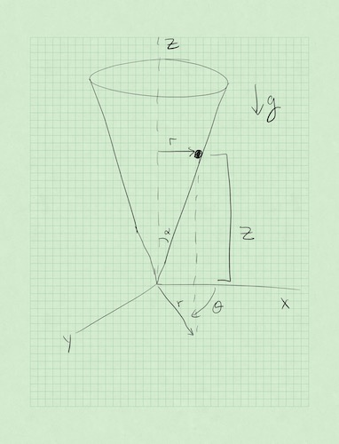

5 Sept 23 - Notes: Lagrangian Dynamics
Contents
Book Reading:
Any Classical Mechanics Book Section on Lagrangian Dynamics
5 Sept 23 - Notes: Lagrangian Dynamics#
Newtonian Mechanics is an incredibly useful model of the natural world. In fact, it wasn’t until the mid 1970s that we were able to truly test Einstein’s gravity as a true replacement for Newton. That being said, for most terrestrial situations (macroscopic objects moving at low speeds), Newton’s mechanics is very good. However, the problem with Newton is that it requires a few things:
We must be able identify each interaction on the object or model an average behavior from many littler interactions (e.g., models of friction vs. detailed E&M forces)
We must be able to mathematically describe the size and direction of the interaction at all times we want to model
We must be able to vectorially add the interactions to produce the net force \(\sum_i \vec{F}_i = \vec{F}_{net}\).
In many cases, we can do this. But consider the picture below of a bead sliding inside a cone. How would you write down the contact force between the cone and the bead for all space and time?

Enter the Lagrangian Mechanics, an equivalent description of Newton’s mechanics developed through several advances in physics and mathematics in the 17th and 18th centuries. Some of the major contributors included Newton, Gottfried Wilhelm Leibniz, Pierre Louis Moreau de Maupertuis, Guillaume de l’Hôpital, Jacques Bernoulli, Jean Bernoulli, and Jean D’Alembert. This period of the development of mechanics was foundational to the development of concepts like the action and phase space as well as approaches like variational analysis, which formed the basis for dynamical systems (phase space describes real motion), quantum mechanics (quantize the action), and perturbation theory (approximate answers can be iteratively sought).
This analysis is grounded in optimization or rather extremization. The idea is as follows:
Consider all potential paths a system can take through phase space
Time each of them between the same two points in phase space
The one that minimizes the action integral over that time/space is the one the system takes
This might seem magical! But it’s truly a deep connection to the energetics of the system, which limit the the relevant equations of motion by both the number of degrees of freedom (ways the system can move) and the constraints equation (things that influence the motion).
Variational Analysis#
The name of the game in calculus of variations is finding extrema (minima, maxima, or stationary points) of integrals that have the form:
While at first this might seem like a strange thing to do, it turns out that this is a very powerful way to solve problems. In fact, we are able to characterize the path of a system through phase space by finding the path that minimizes the action integral . This is called the principle of least action. This kind of analysis also tells us that a Great Circle is the shortest path between two points on a sphere and that Snell’s Law is the shortest path (in time) light takes between two points in different media.
While you are trying to find the minimize \(S\), what you end up finding is the function \(y(x)\) that satisfies this minimization. It turns out that for \(S\) to have extrema, the Euler-Lagrange equation (below) must be satisfied. The handwritten notes below show how to derive this equation for a 1D system, but it can be generalized to \(N\) dimensions.
Applications to Classical Mechanics#
In practice, when approaching a variational problem, the typical workflow if something like this:
Write your problem down in the form of an integral like \(S\).
Use the Euler-Lagrange equation to get a differential equation for the unknown function \(y\).
Solve the differential equation.
We can extend this framework for use in classical mechanics by defining the lagrangian of a system with independent, generalized coordinates \((q_1,\dot{q}_1... q_n,\dot{q}_n)\) as the kinetic energy minus potential energy of a system:
Here, the function \(\mathcal{L}\) is called the Lagrangian of the system and takes the place of \(f\) in the Euler-Lagrange equation. The coordinates \(q_i\) are called the generalized coordinates of the system and they take the place of \(y\) in the 1D Euler-Lagrange equation.
The action is a scalar quantity that “tracks” how the energy changes in a physical system over time. It is the integral of the Lagrangian over a time interval, which we write as the action integral:
Several mathematicians contributed to this work including Leibniz, BErnoulli, Maupertuis, and Euler. Through their collective work, it turns out we can think of the path that a system takes through an abstract space of all the measurements that uniquely characterize it (a phase space). That trajectory through phase space is just as useful as a real physical trajectory in \(x\), \(y\), \(z\) space if we understand what it is doing. And we can abstract that concept to new systems that might not have mechanical analogs (e.g., quantum mechanics).
Their work showed that the path a system takes between points \(1\) and \(2\) in these generalized coordinates is the path such that \(S\) is stationary (you can think of this as minimizing the action integral). This is called the principle of least action. This lets us leverage the Euler-Lagrange equation for the generalized coordinates of our system \(q_n\). We can derive that result, but it is not necessary for you to do so to see the connection between the equation below and the 1D Euler-Lagrange equation.
Once we perform these derivatives on this function, we will obtain \(n\) equations of motion (EOM) for our system; one for each generalized coordinate (\(q_i\)). Note how we didn’t have to know anything about the forces acting on our system to arrive at equations of motion, but rather the energy.
Video on Lagrangian Dynamics#
Parth G. has a lovely video below about the basics of Lagrangian Dynamics.
Non-Commercial Link: https://inv.tux.pizza/watch?v=KpLno70oYHE
Commercial Link: https://youtube.com/watch?v=KpLno70oYHE
Additional Resources#
My notes go into detail on the development of the Lagrangian problem. But practice is the best approach.
Handwritten Notes#
Here are my handwritten notes on the Calculus of Variations and Lagrangian Mechanics.
Calculus of Variations
Lagrangian Dynamics
Lagrangian Example
Lagrangian Example with Generalized Forces and Lagrange Multipliers
Book Readings#
This reading is useful preparation for reminding yourself of Lagrangian Dynamics.
Any classical mechanics book you like! Taylor is a good one.
Video Resources#
If you are a feeling that you would like a little direct instruction on this, this lecture is great. Lots of examples!
Non-Commercial Link: https://inv.tux.pizza/watch?v=zhk9xLjrmi4
Commercial Link: https://youtube.com/watch?v=zhk9xLjrmi4